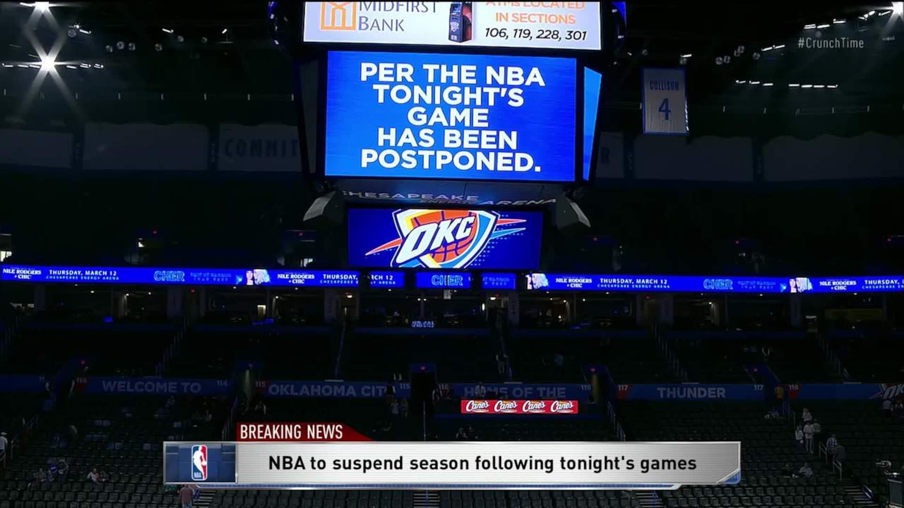
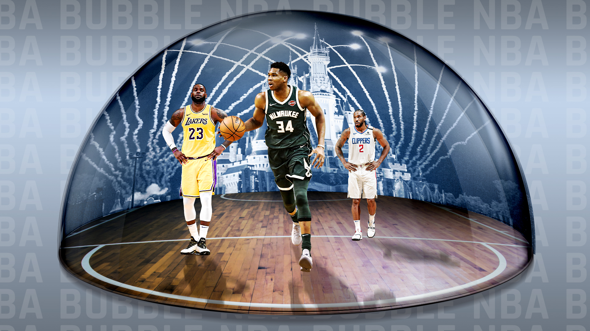
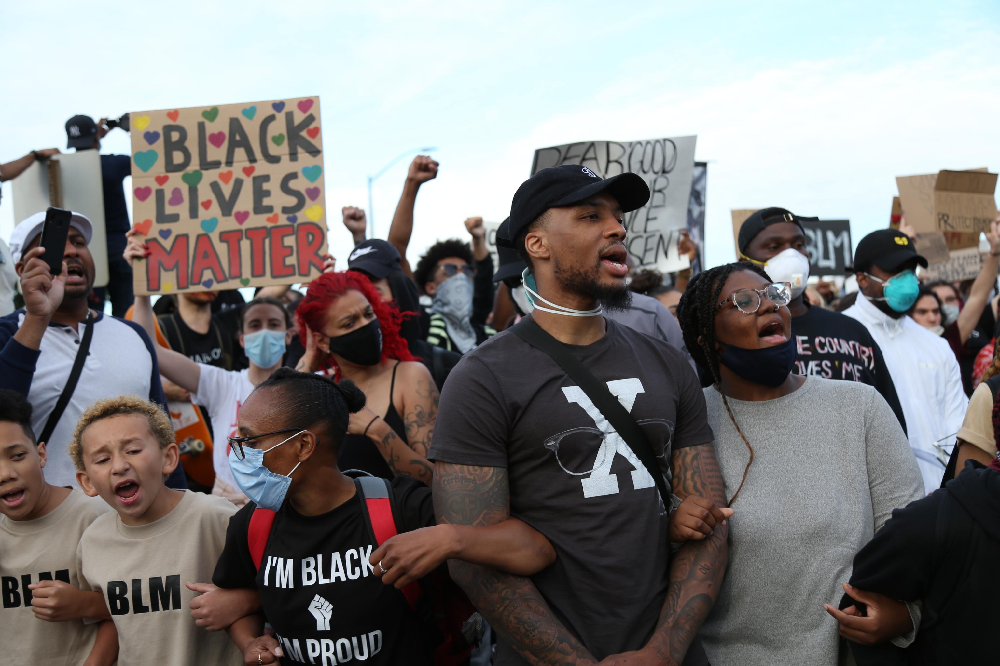

NBA
Context

On March 11th, 2020, the NBA suspended the 2019 NBA season after Utah Jazz center Rudy Gobert tested positive for COVID-19. This announcement came while games were being played, and was the first domino to fall in the sports world and put the US on notice about how real the threat of the coronavirus was. They would resume play on July 7th, starting with exhibition games.
Season

The NBA created a “bubble” environment in Orlando, where all players and staff were limited to the Walt Disney campus, and outside guests. were restricted. There were no fans at any of the games, besides a small group of family for the players. The NBA released a 100+ page memo before the bubble started outlining what players could do and what they couldn’t. One of the more famous points from that memo was that players could not play doubles ping pong. But, from July until the Los Angeles Laker were crowned NBA champions on October 11th, there were no positive cases among the players and staff, rendering the bubble environment as complete success. Dr. Anthony Fauci commended the plan, saying that the bubble plan was ‘quite creative.. [that] they might very well be quite successful with it... they really wanted to make sure that the safety of the players was paramount.'
Social Justice

The break from play, allowed NBA players to focus on social justice following the death of George Floyd. Players participated in marches and protests, and the NBA put the statement “Black Lives Matter” on the courts during the bubble. Also, the NBA allowed players to wear jerseys with approved social justice messages on the back. On August 26th, following the shooting of Jacob Blake, the Milwaukee Bucks decided to boycott Game 5 of their series versus the Orlando Magic. Every other NBA team followed suit, resulting in a three-day stoppage of play. This was one of the most powerful moments in NBA history, a united showing that brought the NBA community and world together to stand against injustice. The NBA has fully backed the players and will continue to support social justice movements.